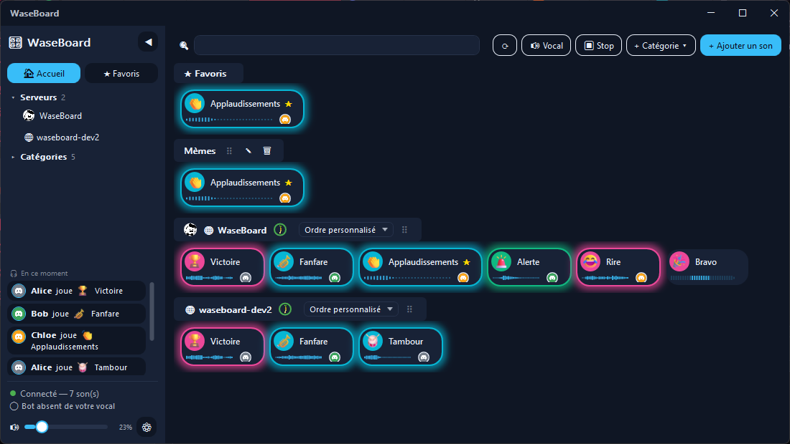

Si quelqu'un a déjà ajouté le bot sur votre serveur Discord (le cas le plus fréquent), vous n'avez besoin de rien d'autre :
C'est tout — l'application se connecte automatiquement à la bonne instance, rien à saisir. La connexion Discord sert uniquement à afficher votre avatar et à retrouver votre salon vocal.
Vous rejoignez plutôt un serveur WaseBoard auto-hébergé (pas l'instance publique) ? Au premier lancement, cliquez « Vous avez votre propre serveur WaseBoard ? », ou changez l'adresse plus tard dans Paramètres.
WaseBoard, c'est deux morceaux qui se connectent au même endroit : le bot Discord (dans votre salon vocal) et l'application Windows (sur votre PC). Ce point commun s'appelle un « serveur WaseBoard » — c'est lui qui héberge le catalogue de sons et fait le lien entre les deux.
Ce serveur, il en existe déjà un public et gratuit (celui de cette page) : vous n'avez besoin d'en installer un vous-même que si vous voulez le vôtre, en totale indépendance. Les deux cas sont expliqués ci-dessous.
Rien à installer côté serveur : ajoutez le bot à votre Discord, téléchargez le client, connectez-vous — c'est tout. Chaque serveur Discord obtient sa propre bibliothèque de sons, isolée des autres.
WaseBoard est open-source : il n'y a pas de serveur central imposé par le projet. Chaque groupe peut héberger la sienne, sans limite et avec un contrôle total des données.